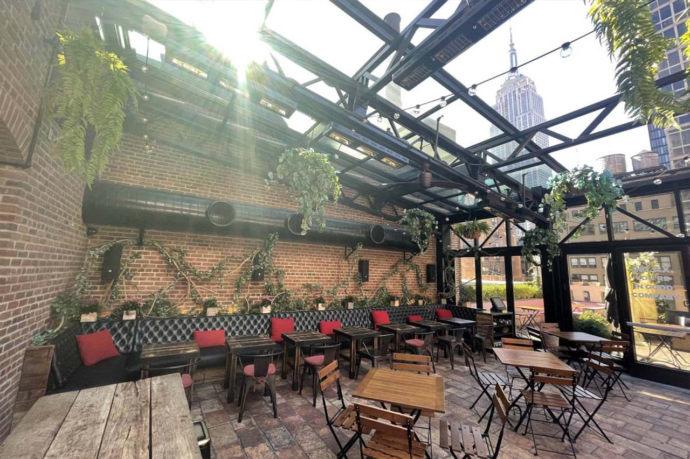

Sunday Funday
While the choices for wonderful and fabulous hotels are abundant, I highly recommend trying my consistent favorite!

CK14NYC
But first, Brunch. Crooked Knife’s 14th Street location down in the Village has a great outdoor patio space that has a uniquely not NYC feel.

Oh So Refined
Refinery Rooftop in the Refinery Hotel in Midtown South, NYC is one of my and my friends’ favorite Sunday brunch spots.